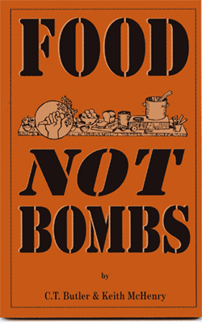

|
|
|
Browsing
Contact Us |
Campaigners |
Face to Face |
Tribune |
Interview |
News |
On the Web |
One Million |
Report
Farsi | Français | German | Italian | Spanish | العربية Also in this section
|
 Food Not Bombs: Lessons in Building Social MovementsThursday 28 June 2007 Interview with Kieth McHenry, Founder of Food Not Bombs By: Niloofar Ensan Keith McHenry is an artist and co-founder of "Food Not Bombs"; "Homes Not Jails," the Low-powered FM Radio movement in the U.S., Indymedia and the "October 22nd No Police Brutality Day." Keith is a full time volunteer with "Food Not Bombs." He designed the logo and co-wrote the book “Food Not Bombs, How to Feed the Hungry and Build Community.” He faced 25 years to life in prison and spent over two years in jail for his work feeding the hungry. He lives in the foothills outside Taos, New Mexico with his partner. CFE: Could you please explain for us how your movement, "Food Not Bombs" got its start? A: Eight anti-nuclear activists started Food Not Bombs in 1980 in Boston, Massachusetts. We are an all volunteer movement of independent chapters sharing free vegetarian meals in hundreds of cities all over the world. Each chapter collects food that can’t be sold, cooks meals and shares it on street corners and in city parks. The food that isn’t cooked is delivered to families in low-income communities. Each chapter uses a process called “Formal Consensus” to make decisions. This process encourages everyone to participate in the decisions of the group. Our process gives women, the homeless and disadvantaged people more access to power in the organization. It also makes our actions more effective because everyone feels that they had a part in the decisions. http://www.wechange.info/english/IMG/jpg/photo_keith-mchenry_feeding.jpg CFE: Have you ever heard of the 1 Million Signatures Campaign in Iran, which seeks to end legal discrimination against women? What do you think about our effort to promote women’s rights? A: For a number of years I have been watching efforts to win equal rights of women in Iran. I have read of a number of protests and arrests of women working for equality. I learned of the One Million Signatures Campaign a few months ago. I think it is a very important movement and I am encouraging all "Food Not Bombs" volunteers to add their names to the campaign and to ask those that are visiting our table to sign the petition. We have posted information about the campaign on our website. "Food Not Bombs" has been working for equal rights of women since we began in 1980. We have organized women’s rights committees in our local chapters and we have worked to insist that those who eat and work with us respect the rights of everyone including women. Your campaign in Iran is very important because of how it will improve the conditions of not only women in Iran but because it will support efforts throughout the world to respect the rights of women. CFE: What similarities do you see between your movement and the One Million Signatures Campaign? A: "Food Not Bombs" and the One Million Signatures Campaign are both grassroots movements working for the dignity of all people. We are taking peaceful nonviolent actions to mobilize public opinion to support the rights of those who are being “officially” harmed. We depend on volunteers to communicate with the public about our concerns. CFE: How do you think that movements like ours can reach beyond the local and national context and have international impact? A: We can cross all national boundaries and support each other by uniting around the principles that we share such as equality, dignity, peace and social justice. I have seen "Food Not Bombs" work in every type of culture because we all share so many ideals. I believe we must work across national boundaries. For instance the American labor movement failed to save American jobs because it would not work with the labor movements in Mexico and Canada. If the American labor Unions united with labor organizations in other countries they could have more impact as a result of their efforts to stop the “free trade agreements.” CFE: How do you think social movements should be organized? Do you think that hierarchical structures are positive for the growth and development of social movements? A: We try not to have a hierarchical order within "Food Not Bombs: and we use a process called “Formal Consensus” to make decisions. We have found this to be one of the most effective principles of our movement. We have hundreds of groups all very dedicated to changing society. Our ability to attract and maintain volunteers for our cause is mostly attributed to the fact that our volunteers are able to play a role in the direction of the movement. Our volunteers take part in the decision-making process and take responsibility for the group because they have power in the movement. Our process lets everyone have equal say in the actions of the group so by the time we have a plan everyone supports it because they had a hand in making the decision. We have a book that details how we run our meetings called “On Conflict and Consensus.” CFE: Is it true that you and your friends have been involved in this movement for 26 years? During the course of these years, have any of the activists involved in your movement been imprisoned or harassed because of their activities? A: Yes, we have been arrested over 1,000 times for feeding the hungry in San Francisco and we have also been arrested in Arcata, Santa Cruz and Whittier, California. We were also arrested in Elgin, Illinois, Tampa and Orlando, Florida, Denver, Colorado, Portland, Oregon and possibly other places in the United States all for feeding the hungry. I was also arrested many times on phony charges including assault and other violent crimes even though I am dedicated to non-violence. I faced 25 years to life in California and spent over 500 days in jail. I was beaten by the police 13 times and hospitalized several times as a result. I was also tortured three times in San Francisco and I still suffer from the injuries I sustained from the torture. Our members have also been arrested in Mexico, the Philippians and the Netherlands but this was while supporting a larger protest or in one case our volunteers were mistaken for being part of the New Peoples Liberation Army. http://www.wechange.info/english/IMG/gif/keith--arrest.gif CFE: What do you have to say to those persons who harass and create obstacles for social activists, engaged in improving their society? A: Our name "Food Not Bombs" and our cause causes concern and alarm among those who are making money selling bombs. Our message is effective and many people support the idea of spending money on human needs and spending less on the military. Our way of organizing by being out in the streets talking with average people is also cause for alarm for those who want to maintain the status quo. The fact that we can feed the hungry and help the homeless shows that the government isn’t honest when it claims it cannot meet the needs of its citizens. Internal police documents, to which we won access through a court process, demonstrate that US authorities are concerned about the fact that we are effective at inspiring change. They fear our example of democracy and our ability to solve problems such as providing food for the survivors of Katrina. As a result they have tried to stop our work in the United States. On the other hand we have had almost no trouble at all outside the U.S. CFE: How do you think that our two movements, the One Million Signatures Campaign and "Food Not Bombs" can be beneficial to one another? A: If we work in a united way we can overcome the resistance of our local governments. We can all take actions all on the same day. We can expose the issues across borders letting everyone know the truth of conditions in each others countries. Food Not Bombs will be able to spread the word about your cause and leaders in your country will see that people all over the world support equal rights for women in Iran. We will be able to show that "Food Not Bombs" can help people in every culture. For us, in the United States, this connection will be beneficial, because we can resist the call to war against Iran by our own government better if we can demonstrate that we are connected to activists in Iran. |
{kind=link}
{kind=link}